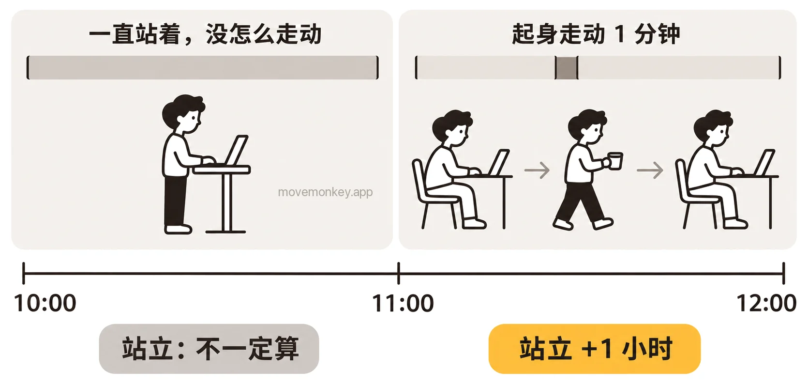

Apple Watch 站了却没算站立小时，是怎么回事？
下面按 Apple 的说明和用户的反馈，列出苹果手表（Apple Watch）站了却没算站立小时的几种原因，以及要检查哪些设置。
Apple Watch 站着却不算站立，是怎么回事？
可能是只站着、没怎么活动：Apple 要求的是站起来并活动，不只是站着。
Apple Watch 按整点一小时一小时地算站立：一小时里站起来并活动至少 1 分钟，这一小时就算站过，记为 1 个站立小时。[1]站立目标是一天要有几个站立小时，可以设为 6 到 16 小时。[2]站立提醒是在这一小时还没站过时，到第 50 分钟提醒你。[3]
Apple 介绍健身圆环时说：“站起来，更要动起来。当你站起身时，可以在周围稍微动一动，比如喝点水、伸伸懒腰、找同事聊聊天。”[4]

有用户反映，Apple Watch 判断站立主要看手臂的摆动。推购物车、站着做饭、在站立办公桌前双手放在桌上工作时，手臂不怎么摆动，站着也可能不算。[5]英国邓迪大学的研究者分析了 20 名 Apple Watch 用户的数据，发现一小时是否记为站立小时，和这一小时里的步数、活动能量关系最大；作者也认为，是否记为站立小时可能不只取决于一个因素。[6]详见 Apple Watch 怎么判断你站起来了？
Apple Watch 没戴好或关了手腕检测，站立会记不上吗？
Apple 的说明：关闭“手腕检测”后，“部分‘健身记录’测量将不可用”。[7]
“手腕检测”默认打开；在 Apple Watch 上前往“设置” App，轻点“密码”，就能看到它。[7]另外，Apple Watch 戴得太松或太紧，或者和手腕之间隔着手链、衬衫袖子，可能检测不到它戴在手腕上，见 Apple Watch 没戴好，会收不到站立提醒吗？[8]
只带 iPhone、没戴 Apple Watch，不会记站立。“站立”圆环只在有 Apple Watch 时显示[9]，站立分钟数也由 Apple Watch 记录[10]。
Apple Watch 站立记不上，要检查哪些设置？
先确认 iPhone 上的“健康” App 里，Apple Watch 的“健身追踪”是打开的。
Apple 建议，如果“健康”没有记录步数或其他信息，为 Apple Watch 打开这项设置。[11]
- 在 iPhone 上打开“健康” App。
- 轻点“摘要”和你的头像，然后轻点“设备”。
- 轻点你的 Apple Watch。
- 轻点“隐私设置”，打开“健身追踪”。[11]
如果设置了使用轮椅，Apple Watch 记的是转动，不是站立：“站立”圆环会变成“转动”圆环。[1]这项设定在 iPhone 上的 Apple Watch App 里：轻点“我的手表”，轻点“App”，然后轻点“健康”，再轻点“健康详细信息”和“编辑”，在“轮椅”一栏更改。[12]
Apple Watch 上算了站立，iPhone 上为什么还没显示？
iPhone 上的站立小时，可能比 Apple Watch 上晚一些显示。
Apple 的工程师在开发者论坛上回答开发者的提问时说明，iPhone 和配对的 Apple Watch 之间的“健康”数据同步不是实时的，什么时候同步由系统决定。[13]
坐着时 Apple Watch 也算了站立，是怎么回事？
有用户反映，坐着时手臂一直在动，比如织毛衣，也可能被算作站立。[5]
这和站着却不算站立是同一个原因，见上文站着为什么不算。

久坐提醒 App · 现已在 App Store 推出
MoveMonkey：从上次起身开始算的久坐提醒
从你上次起身开始，坐满你设定的时间（30、45、60 或 90 分钟），小猴子才会提醒你。适用于 iPhone 和 Apple Watch，只用 iPhone 也可以；走动或站立后自动重新计时。
早上等你起身后才开始计时，午休可以设为不提醒，提醒时段也由你设定。
轻点“起身动动”，只要走上 1 分钟，小猴子还会为你喝彩。
核心功能永久免费，没有广告。
看更详细的介绍 →